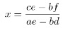
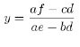
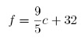
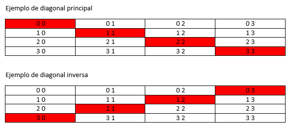

Ejercicios Unidad 2 - Programación estructurada. Estructuras de control y repeticiónEjercicios de repasoEjercicios de estructuras condiciónales.Ejercicios de estructuras repetitivas.Ejercicios de todo tipo.Ejercicios de matrices.

| Fecha | Versión | Descripción |
|---|---|---|
| 23/09/2021 | 1.0.0 | Versión inicial. |
| 27/09/2021 | 1.0.1 | Corrección de errores. |
| 14/10/2021 | 1.0.2 | Se añaden ejercicios de matrices |
| 24/09/2024 | 2.00 | Se modifican actividades. |
Ejercicios Unidad 2 - Programación estructurada. Estructuras de control y repetición
NOTA: Los ejercicios serán resueltos con pseudocódigo, diagramas de flujo o Java. Por ello, al principio de cada uno se indicará de la siguiente forma con qué debe ser desarrollado:
p - Indicará pseudocódigo
df - Indicará Diagrama de flujo
j - Indicará Java
d - Indicará Dart
Se podrá indicar varias formas de resolverlo, y hay que resolverlos con TODAS las formas indicadas.
En los ejercicios que no se especifique como introducir algún número este se ha de solicitar por consola.
Ejercicios de repaso
(p, j) Realiza un algoritmo que convierta de pulgadas a centímetros. Pedir las pulgadas por consola.
1 pulgadas = 2.54 cm.
(p) Escribe un algoritmo que calcule el cubo de un número dado. Pedir el número por consola.
(p, j) Realiza un algoritmo que calcule el área y el volumen de un cilindro cuyas dimensiones, radio y altura, se introducen desde el teclado.
V = PI * r2 * h
S = 2 * PI * r * h
(df) Crea un algoritmo que calcule la hipotenusa de un triángulo rectángulo conociendo el valor de sus dos catetos.
Hipotenusa2 = cateto2 + cateto2
(j) Realiza un algoritmo que permita convertir metros en pies y a pulgadas. Ha de solicitar por teclado cuantos metros se quieren convertir.
1m = 39,27 pulgadas
12 pulgadas = 1 pie
(p, df, j) Crea un algoritmo que permita intercambiar el valor de tres variables A,B,C. B toma el valor de A, A toma el valor de C y C toma el valor de B.
Ejercicios de estructuras condiciónales.
(df) Algoritmo que determine si un número es par o impar.
(p) Algoritmo muestre los números pares entre dos números naturales introducidos.
(j) Algoritmo que lea 5 valores numéricos positivos y calcule su producto.
(p, j) Ingresar 2 números distintos de cero y mostrar la división decimal entre ellos
(df, j) Ingresar 3 números por teclado e imprimirlos en forma ordenada.
( j) Suma, producto y división de dos valores tomados del teclado, imprimiendo el resultado. Es necesario que la división no proporcione error si hay una división por cero, sino que informe de la situación.
( j) Cálculo del área de un rectángulo, tomando los datos necesarios del teclado y presentando el resultado por pantalla.
a = base*altura.
( j) Leer un número del teclado y decir por pantalla si es positivo o negativo.
( j) Un sistema de ecuaciones lineales:
ax + by = c
dx + ey = f
se puede resolver con las siguientes fórmulas:


Diseñar un programa que pidiendo por pantalla a; b; c; d; e; f calcule los valores de x e y.
(j) Una temperatura Celsius (centígrados) puede convertirse en su equivalente Fahrenheit de la siguiente forma:

Escribir un programa que lea una temperatura en grados Celsius y la escriba en Fahrenheit.
( j) Escribir un programa que determine cuando un año es bisiesto. Un año es bisiesto si es múltiplo de 4. NOTA: Los múltiplos de 100 solo son bisiestos cuando también son de 400 (1800 no es bisiesto, pero 2000 si).
( j) Escribir un programa que por medio de un switch calcule el número de días de ese mes. No consideramos los años bisiestos.
( j) Para entrar a un partido de fútbol sala se tienen tres precios en función de la edad:
Gratis si es menor de 5 años.
2 euros si es menor de 15 años.
3 euros si es mayor de 15 años.
Escribir un programa que indique el precio en función de la edad.
(j) Escribir un programa que solicite al usuario la nota de un examen y el sexo del alumno. Según los datos introducidos el programa deberá mostrar: SUSPENSO/SUSPENSA, APROBADO/APROBADA, NOTABLE O SOBRESALIENTE.
(j) Escribir un programa que indique el tipo de un triángulo a partir de sus tres lados.
3 lados iguales = equilátero
2 lados iguales = isósceles
ningún lado igual = escaleno
(j) Dadas las cuatro notas de un alumno (solicitarlas por consola), escribir un programa que calcule e informe del promedio de las notas y, además, indique si está aprobado o no. La condición de aprobado es obtener un promedio mayor o igual a 4,5.
(j) De una prueba de nivel realizada a un alumno se conoce la cantidad total de preguntas realizadas y la cantidad de respuestas correctas (por consola se pedirá el número total de preguntas realizadas y de respuestas correctas). Informar el nivel registrado de acuerdo a la siguiente escala :
Muy Bueno si el porcentaje es mayor o igual a 90% ;
Bueno entre 70% y 90% ;
Regular entre 50% y 70% ;
Malo si el porcentaje es menor que 50%.
( j) Programa que lea un número correspondiente a un año y escriba si es o no bisiesto. (Son bisiestos los múltiplos de 4, excepto los que son múltiplos de 100 pero que no sea múltiplo de 400).
(j) Algoritmo que calcule la distancia euclídea entre dos puntos del plano tomando como entrada las coordenadas de los puntos.

( j) Diseñar un algoritmo que examine un carácter introducido indicando el color que tiene asignado dicho carácter:
ROJO, si el carácter es ‘r’ o ‘R’
VERDE, si el carácter es ‘v’ o ‘V’
AZUL, si el carácter es ‘a’ o ‘A’
NEGRO, si el carácter es ‘n’ o ‘N’
Ejercicios de estructuras repetitivas.
(j) Leer un número y mostrar su tabla de multiplicar.
(j) Leer una secuencia de números, hasta introducir un número negativo y mostrar la suma de todos ellos.
(j) Leer un número y determinar su factorial.
(j) Presentar por pantalla todos los números positivos leídos de una serie, terminando dicha serie cuando introduces un 0. Se pueden introducir números negativos.
(j) Se leen 30 números del teclado y se pide que se listen sólo los positivos menores de 5 y los negativos mayores de -5.
(j) Programa que calcule e imprima la suma y el producto de los 100 primeros números pares.
(j) Algoritmo que muestre la tabla de multiplicar de los 10 primeros números.
( j) Introducir una serie indeterminada de números enteros positivos por teclado. El programa terminará en el instante en que se introduzca un número menor o igual a 0 y como resultado mostrará la suma de números pares e impares introducidos hasta ese momento.
( j) Realizar un programa que calcule la superficie de un triángulo.

El programa validará que los valores correspondientes a la base y a la altura sean positivos. Una vez calculada la superficie, mostrará el resultado por pantalla y preguntará si se desea repetir. Si la respuesta del usuario es sí, volverá a repetirse la operación y en caso contrario terminará.
( j) Escribir un programa que permita a un usuario calcular el área de una circunferencia o el volumen de una esfera. Usa un menú.


( j) Realizar un algoritmo que encuentre el menor número de billetes de 500,200,100,50,20,10 y 5€ necesarios para pagar una cantidad C asignada.
( j) Diseñar un algoritmo que permita calcular el área y el perímetro de las siguientes figuras planas: círculo, rectángulo, cuadrado, rombo, triangulo. Utilice un menú donde el usuario pueda elegir la opción deseada pudiendo este realizar varios cálculos sin necesidad de volver a ejecutar el algoritmo. En cada caso pedir los datos necesarios.
(el perímetro de todas las figuras es igual a la suma de sus lados, excepto el del círculo que es 2*Π*radio.)
area_circulo= Π*radio^2
area_rectángulo=base*altura
area_cuadrado= lado^2
area_rombo=lado*altura
area_triangulo=(base*altura)/2
(d j) Realizar un algoritmo que muestre el cuadrado y el cubo de todos los números existentes entre dos números introducidos.
(d, j) Diseñar un algoritmo que permita mostrar un menú con las siguientes opciones:
Juegos de salón : cartas, ajedrez, damas, prendas.
Juegos al aire libre:
a) Individuales: atletismo, senderismo, natación
b) Colectivos: gimnasia, rítmica, rugby, polo, futbol.
Salir
El algoritmo visualizará un menú con las opciones 1ª y 2ª, y según la opción que indique el usuario, los juegos que hay o el siguiente menú en la opción 2ª.
(d, j) Realizar un algoritmo que calcule la suma de cada tercer entero, comenzando por 2, es decir, calcular la suma de 2+5+8+11+...., para todos los valores menores que 100. Resuelve el problema de tres formas diferentes: utilizando un esquema mientras, un esquema repetir y un esquema para.
(d, j) Escribir un programa que simule LA PRIMITIVA: Pedir 6 números y los almacenará en un array (números entre el 1 y el 49). Despues generará aleatoriamente 6 número entre el 1 y el 49, y no pueden repetirse. Después hallará un numero aleatorio entre 1 y 9 para el reintegro. Esto se almacenará también en un array.
Por último mostrará los aciertos que han habido y preguntará si se quiere comenzar de nuevo el proceso, pidiendo de nuevo los 6 números con los que se participa y generando el sorteo.
(j) Escribir un programa que simule un BRAIN TRAINING Nivel fácil: De forma aleatoria mostrará al usuario una operación (+,-,*,/) y dos números del 1 al 10, y pida el resultado. Si es correcto le sumará un punto.
En total se piden 20 operaciones y al final se muestra el porcentaje de aciertos.
(j) Escribir un programa que tenga almacenados 5 títulos de películas y su correspondiente director. Mostrará al usuario un título de forma aleatoria y le pedirá que introduzca el director de la película. Si es el correcto dará el mensaje de acierto, sino le quitará un punto (al inicio tiene 5 puntos). El programa termina si el usuario agota los 5 puntos o cuando el usuario no quiera continuar, se mostrará, al final, el porcentaje de aciertos.
Ejercicios de todo tipo.
( j) Realizar un programa para una máquina expendedora. La máquina vende un único producto que vale 2´10 euros. A partir de un valor introducido por teclado y que representa la cantidad de dinero que el usuario ha puesto en la máquina, ésta hará lo siguiente:
Si la cantidad introducida no alcanza para el producto, mostrará el mensaje “Cantidad insuficiente. Introduzca moneda”.
En caso contrario y teniendo en cuenta que se tienen infinitas monedas de 50, 20, 10 y 5 céntimos de euro, devolver el cambio procurando dar siempre el menor número de monedas posible.
(d, j) Realizar un algoritmo que permita leer tres números para después ordenarlos de mayor a menor o de menor a mayor. El tipo de ordenación se le pedirá al usuario, pudiendo este volver a introducir nuevos datos sin tener que volver a ejecutar el algoritmo.
(j) Se desea calcular el salario neto semanal de un trabajador en función del número de horas trabajadas y de la tasa de impuestos:
Las primeras 35 horas se pagan a tarifa normal.
Las horas que pasen de 35 se pagan a 1.5 veces la tarifa normal.
Las tasas de impuestos son:
Los primeros 600 euros son libres de impuestos.
Los siguientes 400 euros tienen un 25% de impuestos.
Los restantes, un 45% de impuestos.
La tarifa horaria normal es de 8 euros.
El algoritmo debe obtener a partir de las horas trabajadas, el salario bruto, las tasas descontadas y el salario neto.
(j) Un hotel tiene un sistema para el cobro de las tarifas de sus clientes. Las habitaciones están clasificas en grupos o categorías, cada una con un precio:
A: 200 euros/día
B: 180 euros/día
C: 120 euros/día
D: 80 euros/día
Realizar un programa que calcule la tarifa total de un cliente a partir del número total de días que ha permanecido en el hotel y de la categoría de la habitación en la que se ha alojado.
(j) Una persona, consigue un préstamo del banco de p euros. Ese préstamo lo irá amortizando mediante el pago mensual de A euros hasta que complete la cantidad total prestada. Parte el pago mensual serán intereses, calculados como el % de la cantidad aún no pagada. El resto del pago servirá para reducir la cantidad adecuada.
Realizar un algoritmo que permita determinar la siguiente información:
La cantidad de interés pagado cada mes.
La cantidad de dinero aplicado a la reducción de la deuda total cada mes.
La cantidad total de intereses que se lleva pagada al final de cada mes.
La cantidad de deuda aún no pagada al final de cada mes.
El número de pagos mensuales necesarios para devolver el préstamo.
La cuantía total del último pago, ya que puede ser menor que A.
Prueba el algoritmo con los siguientes datos:
P=6000 euros; A=135 euros; %interes= 12% anual.
( j) Una empresa de alquiler de automóviles tiene un sistema de cobro basado en los kilómetros realizados por sus clientes. Sus tarifas son las siguientes:
Entre 10 y 100 Km: 2 euros/Km.
De 100 y 999 Km: 1´50 euros/Km.
Más de 1000 Km: 1 euro/Km.
Realizar un programa que calcule la factura de un cliente en base a los Km realizados.
( j) Escribir un programa que permita almacenar una contraseña y acceder al sistema. El programa debe presentar un menú con las siguientes opciones:
Introducir contraseña.
Cambiar contraseña. (Para permitir esta opción será necesario ingresar la contraseña antigua).
Acceder al sistema. (Esta opción mostrará un mensaje al usuario de que está dentro del sistema y le preguntará si desea salir; si es así volverá al menú principal. Para acceder a esta opción la contraseña introducida debe ser correcta.)
Salir.
La contraseña estará formada por 4 dígitos entre el 0 y el 9.
(d, j) Escribir un programa que muestre un menú con las diferentes categorías de empleados. Cuando se seleccione una categoría, se pedirá el nombre y apellidos del trabajador, la fecha de ingreso en la empresa (año), cantidad de horas trabajadas en el mes y la cantidad de horas extras trabajadas. Con estos datos, el programa deberá informar del apellido, el nombre, el sueldo base, la cantidad de dinero por horas extras si existe, la cantidad por antigüedad, la cantidad de cada descuento y el sueldo total a cobrar.
La categoría puede ser: administrativo, técnico, profesional u operario.
El valor de la hora trabajada por categoría es: 5€, 7€, 12€ y 3€ respectivamente.
Las horas extras tienen un valor superior en un 50%.
El sueldo a cobrar se compone de: sueldo base (cantidad de horas * valor hora) + cantidad por horas extras + porcentaje por años de antigüedad - un descuento del 3% por obra social - un descuento del 10% por jubilación.
Los porcentajes se calculan sobre el sueldo base.
La antigüedad se calcula según: 5% entre 1 y 3 años, 10% entre 4 y 6 años, 20% entre 7 y 10 años, 50% entre 11 y 15 años, 100% más de 16 años (años cumplidos).
( j) Diseña un programa que imite a una calculadora capaz de realizar las operaciones básicas (suma, resta, producto y multiplicación) y dos operaciones complejas como la potencia y la raíz cuadrada, la aplicación debe mostrar inicialmente un menú similar al siguiente:
Emulador Calculadora
Elige una opción:
1.- Operaciones básicas.
2.- Operaciones complejas.
3.- Salir.
En el caso de la opción 1 se deberá mostrar:
a. Suma.
b. Resta.
c. Producto.
d. División.
En el caso de la opción 2 se deberá mostrar:
a. Potencia.
b. Raíz cuadrada.
Una vez elegida la opción correspondiente el programa deberá solicitar los datos necesarios y mostrar por pantalla el resultado obtenido en cada caso. El programa deberá controlar los posibles errores que se puedan producir a la hora de elegir la opción y de introducir los datos por teclado de tal forma que si los datos introducidos fueran erróneos los vuelva a solicitar.
Ejercicios de matrices.
(d, j) Crear una matriz de 3×3 con los números del 1 al 9. Mostrar por pantalla, tal como aparece en la matriz.
(d, j) Crear una matriz de 5 filas y n columnas (se pide al usuario). Rellenarlo con números aleatorios entre 0 y 10.
(d, j) Crear dos matrices de nxn e implementar la suma de matrices, los resultados se deben almacenar en otra matriz. Los valores y la longitud, seran insertados por el usuario. Mostrar las matrices originales y el resultado.
(d, j) Nos piden crear una matriz de 4×4 de números enteros que inicialmente esta vacía, nos piden hacer un menú con estas opciones:
Rellenar TODA la matriz de números. Esto debe pedirse al usuario.
Suma de una fila que se pedirá al usuario (controlar que elija una correcta)
Suma de una columna que se pedirá al usuario (controlar que elija una correcta)
Sumar la diagonal principal (ver ejemplo)
Sumar la diagonal inversa (ver ejemplo)
La media de todos los valores de la matriz
IMPORTANTE: hasta que no se haga la primera opción, el resto de opciones no se deberán de ejecutar, simplemente mostrar un mensaje donde diga que debes rellenar la matriz.
Ejemplo:

(j) Generar una matriz de 3×3 con números aleatorios sin repetirse.
(j) Nos piden que implementemos el software para una máquina expendedora de golosinas.
Cada golosina tiene un nombre y un precio para ahorrar tiempo, os paso los datos que tendrá a continuación (copiar y pegar):
xString[][] nombresGolosinas = {{"KitKat", "Chicles de fresa", "Lacasitos", "Palotes"},{"Kinder Bueno", "Bolsa variada Haribo", "Chetoos", "Twix"},{"Kinder Bueno", "M&M'S", "Papa Delta", "Chicles de menta"},{"Lacasitos", "Crunch", "Milkybar", "KitKat"}};double[][] precio = {{1.1, 0.8, 1.5, 0.9},{1.8, 1, 1.2, 1},{1.8, 1.3, 1.2, 0.8},{1.5, 1.1, 1.1, 1.1}};int[][] cantidad = {{5, 5, 5, 5},{5, 5, 5, 5},{5, 5, 5, 5},{5, 5, 5, 5}};
También tendrán una cantidad inicial, que en principio será de 5.
Tendremos un pequeño menú con las siguientes opciones:
Meter dinero: Nos permitirá meter dinero en la máquina. Por defecto tendremos 0.0€ en la máquina.
Pedir golosina: pedirá la posición de la golosina que quiera. Esta máquina tiene golosinas en cada posición, identificados por su fila y columna, que será lo que introduzca el usuario al pedir una golosina, por ejemplo si el usuario teclea 20 significa que está pidiendo la golosina que está en la fila 2 columna 0 (o sea se entran números de dos dígitos, donde el primero será la fila y el segundo la columna). Cuando no haya más golosinas se le indicará al usuario. Solo puede pedir una golosina y supondremos que el usuario siempre tiene dinero al elegir. Recuerda de disminuir la cantidad en 1 al pedir una golosina, ya que se pide de una en una.
Mostrar golosinas: mostrara todas las golosinas disponibles. Mostrará el código que debe introducir el usuario, el nombre y el precio. La cantidad que queda no se mostrará, solo si hay disponibilidad o no.
Rellenar golosinas: esta es una función exclusiva de un técnico por lo que nos pedirá una contraseña, si el usuario escribe “MaquinaExpendedora2021” le pedirá la posición de la golosina y la cantidad que aumentará el número actual.
Apagar maquina: sale del programa, antes de salir mostrara las ventas totales durante la ejecución del programa.